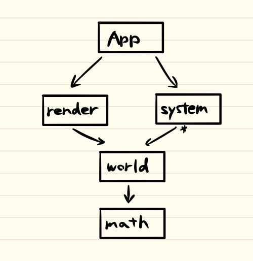

レイヤー分割

矢印が A -> B は「AがBに依存する」ことを表します。また、systemの部分にある*は、「複数のsystemがworldに依存する」ことを表します。
各レイヤーについて説明します。
- math: ベクトル、行列、四元数の演算などの数学的な知識を保有します。具体的なエンティティーは存在しない、法則のみが存在する虚無宇宙であると言えます。
- world: 世界と、その世界に属するエンティティーの知識を保有します。また、利便性のためにエンティティーの位置、姿勢、形状などの単純な物理系の知識も持ちます。
- render: 世界を外側から俯瞰するカメラや、それを二次元スクリーンに投影する知識を保有します。
- system: 各系の知識を保有します。系とは、宇宙の一部のうち、考察の対象として注目している部分を表します。
具体的なものとしては、物理系、オブジェクトの親子関係を定義する系、その他独自のゲームロジックを記述する系があります。
世界に属するエンティティーを実体モデルとして解釈したのに対し、系は世界の動きに対する私たちの解釈、すなわち論理モデルであると言えます。
当然、すべての生物の動作、感情は原子の動きをシュミレートすることによって再現することができますが、それはあまりにも多くの計算を要することになります。
そこで、私たちはある時には数学を、ある時には自然言語を用いて解釈付けをし、論理モデルとして落ち着かせてきました。このように、モデルの定義は世界に対するトップダウン的な捉え方なので、パーソナルエリア
やATフィールドといった精神的なものも系にできます。 - app: アプリケーション、つまりこのゲームエンジンを応用して作る作品を表します。
データの流れ
worldには、それに属するentityが存在します。各系を通してworldの状態を更新していき、world'が生成されます。world'からその時点での世界のスナップショットを作成し、
それをScreenに渡します。これを繰り返すことによって、世界が動き出し、それがスクリーンに描画され続けます。
各系同士は、直交する系同士は並列処理ができます。また関連性のある系同士は親子関係を持たせることにより、整合性を確保できます。このため、物理系も系の一部として一般化することによって、
簡単に扱うことができるようになっています。

worldの情報の更新を適用する際、系同士がworldの同じ情報を変更する場合は、その変更処理を同期する必要がありますが、
そうでない場合はフレームを跨いだ並列処理が可能となります。